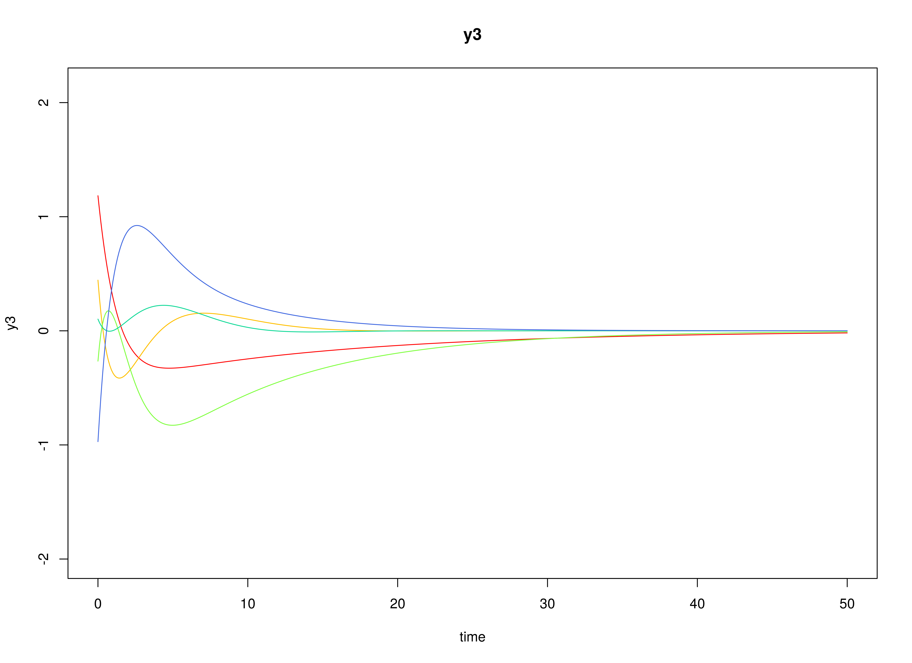
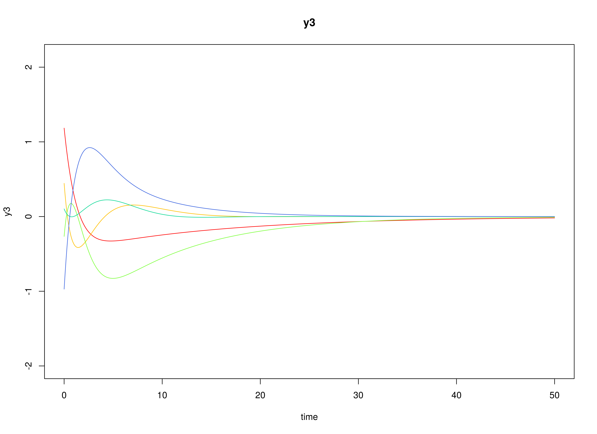

Multivariate Meta-Analysis of Continuous-Time VAR Estimates (Mixed-Effects Model)
Ivan Jacob Agaloos Pesigan
2024-08-11
Source:vignettes/fit-ct-var-id-mixed.Rmd
fit-ct-var-id-mixed.RmdModel
The measurement model is given by where , , and are random variables and , , and are model parameters. represents a vector of observed random variables, a vector of latent random variables, and a vector of random measurement errors, at time and individual . denotes a vector of intercepts, a matrix of factor loadings, and the covariance matrix of .
An alternative representation of the measurement error is given by where is a vector of independent standard normal random variables and .
The dynamic structure is given by where is the long-term mean or equilibrium level, is the rate of mean reversion, determining how quickly the variable returns to its mean, is the matrix of volatility or randomness in the process, and is a Wiener process or Brownian motion, which represents random fluctuations.
Data Generation
Notation
Let be the number of time points and be the number of individuals.
Let the measurement model intecept vector be given by
Let the factor loadings matrix be given by
Let the measurement error covariance matrix be given by
Let the initial condition be given by
Let the long-term mean vector be given by
Let the drift matrix be normally distributed with the following means
and covariance matrix
The SimPhiN function from the simStateSpace package generates random drift matrices from the multivariate normal distribution. Note that the function generates drift matrices that are stable.
Let the dynamic process noise covariance matrix be given by
Let .
R Function Arguments
n
#> [1] 10
time
#> [1] 500
delta_t
#> [1] 0.1
mu0
#> [[1]]
#> [1] 0 0 0
sigma0
#> [,1] [,2] [,3]
#> [1,] 1 0 0
#> [2,] 0 1 0
#> [3,] 0 0 1
sigma0_l
#> [[1]]
#> [,1] [,2] [,3]
#> [1,] 1 0 0
#> [2,] 0 1 0
#> [3,] 0 0 1
mu
#> [[1]]
#> [1] 0 0 0
# first phi in the list of length n
phi[[1]]
#> [,1] [,2] [,3]
#> [1,] -0.4101502 0.02987347 0.09881764
#> [2,] 0.8531253 -0.47051414 0.12907652
#> [3,] -0.2282550 0.66648281 -0.72701868
sigma
#> [,1] [,2] [,3]
#> [1,] 0.1 0.0 0.0
#> [2,] 0.0 0.1 0.0
#> [3,] 0.0 0.0 0.1
sigma_l
#> [[1]]
#> [,1] [,2] [,3]
#> [1,] 0.3162278 0.0000000 0.0000000
#> [2,] 0.0000000 0.3162278 0.0000000
#> [3,] 0.0000000 0.0000000 0.3162278
nu
#> [[1]]
#> [1] 0 0 0
lambda
#> [[1]]
#> [,1] [,2] [,3]
#> [1,] 1 0 0
#> [2,] 0 1 0
#> [3,] 0 0 1
theta
#> [,1] [,2] [,3]
#> [1,] 0.2 0.0 0.0
#> [2,] 0.0 0.2 0.0
#> [3,] 0.0 0.0 0.2
theta_l
#> [[1]]
#> [,1] [,2] [,3]
#> [1,] 0.4472136 0.0000000 0.0000000
#> [2,] 0.0000000 0.4472136 0.0000000
#> [3,] 0.0000000 0.0000000 0.4472136 
Using the SimSSMOUIVary Function from the
simStateSpace Package to Simulate Data
library(simStateSpace)
sim <- SimSSMOUIVary(
n = n,
time = time,
delta_t = delta_t,
mu0 = mu0,
sigma0_l = sigma0_l,
mu = mu,
phi = phi,
sigma_l = sigma_l,
nu = nu,
lambda = lambda,
theta_l = theta_l
)
data <- as.data.frame(sim)
head(data)
#> id time y1 y2 y3
#> 1 1 0.0 -0.9066322 0.2077655 -0.1532395
#> 2 1 0.1 -2.0187881 0.1100828 1.5700524
#> 3 1 0.2 -1.9509792 0.7388884 0.6062416
#> 4 1 0.3 -0.7648885 -0.3710951 0.6992641
#> 5 1 0.4 -1.9989218 -1.4027964 -0.1971148
#> 6 1 0.5 -1.7412161 -0.2356327 -0.4460133
plot(sim)


Model Fitting
The FitCTVARIDMx function fits a CT-VAR model on each
individual
.
The argument theta_fixed = FALSE is used here to model the
measurement error variances.
library(fitCTVARMx)
fit <- FitCTVARIDMx(
data = data,
observed = paste0("y", seq_len(k)),
id = "id",
time = "time",
theta_fixed = FALSE,
ncores = parallel::detectCores()
)
fit
#>
#> Means of the estimated paramaters per individual.
#> phi_11 phi_21 phi_31 phi_12 phi_22 phi_32
#> -0.329091189 0.851689092 -0.507551362 0.015917202 -0.509584686 1.032802799
#> phi_13 phi_23 phi_33 sigma_11 sigma_22 sigma_33
#> 0.007716078 0.033385190 -1.017327464 0.100409860 0.101391404 0.121158245
#> theta_11 theta_22 theta_33
#> 0.200496451 0.193508168 0.197870476Multivariate Meta-Analysis
The MetaVARMx function performs multivariate
meta-analysis using the estimated parameters and the corresponding
sampling variance-covariance matrix for each individual
.
Estimates with the prefix b0 correspond to the estimates of
phi_mu. Estimates with the prefix b1
correspond to the estimates of the effects of x on
y. Note that the effects of x on
y in this case are all zeros. Estimates with the prefix
t2 correspond to the estimates of phi_sigma.
Estimates with the prefix i2 correspond to the estimates of
heterogeniety.
library(metaVAR)
meta <- MetaVARMx(
object = fit,
x = x,
ncores = parallel::detectCores()
)
#> Running Model with 72 parameters
#>
#> Beginning initial fit attempt
#> Running Model with 72 parameters
#>
#> Lowest minimum so far: -94.0896376137265
#> Not all eigenvalues of the Hessian are positive: 35790.7949490418, 21251.5462163924, 12296.2574802078, 7386.87142883634, 6655.50191889013, 6524.08713478392, 6053.72912691298, 5589.93811422731, 5164.47438541966, 4889.95205973168, 4878.87826200772, 4778.75799483679, 4647.98621921615, 4645.87648971558, 4184.0587950873, 3935.9105380296, 3826.51787573621, 3268.25418777488, 3135.56088806033, 3109.52567907781, 3109.26837980743, 3062.18154870229, 2946.0426343065, 2641.1621794212, 2560.13371826275, 2331.51791996992, 2288.29767799216, 2211.97518461421, 2043.187000509, 1829.5584229751, 1743.11915471529, 1720.13570132429, 1341.4993028565, 1271.95415746726, 1172.91383707082, 1148.79126488549, 1068.52920810271, 984.799723890965, 980.965482240201, 946.45841509295, 693.692807353094, 675.909913618555, 627.385426588078, 569.753731032939, 521.396489910656, 512.3152149919, 473.99447978575, 443.607697634881, 406.603409383721, 387.56324056842, 288.778163084038, 274.995326759006, 250.030003103249, 214.807448465467, 210.114957711949, 207.05828193939, 170.134247853347, 165.040337645697, 154.100173290485, 143.942099570984, 104.838272748198, 103.753340088757, 91.1293105573843, 79.156198767891, 73.231104646983, 57.0243424631682, 23.2265216497314, 17.8822012587247, 12.0958691086246, 3.08683723061231, -0.000540384241541784, -0.111188632828992
#>
#> Beginning fit attempt 1 of at maximum 1000 extra tries
#> Running Model with 72 parameters
#>
#> Lowest minimum so far: -94.089637613759
#> Not all eigenvalues of the Hessian are positive: 35790.787760964, 21251.5499092095, 12296.261608816, 7386.87043652605, 6655.50267693665, 6524.08804522512, 6053.72881698642, 5589.93976839236, 5164.47565317823, 4889.95297476935, 4878.87901716456, 4778.75791140113, 4647.98677464119, 4645.87618093124, 4184.05820462959, 3935.910636932, 3826.51916201422, 3268.25427279462, 3135.56195876185, 3109.52656919485, 3109.26855317487, 3062.18149315338, 2946.04261723947, 2641.16147819117, 2560.13465436414, 2331.51705304993, 2288.29821837308, 2211.97588820223, 2043.18583975654, 1829.55775748678, 1743.11897539374, 1720.13601091845, 1341.5000126958, 1271.95382435541, 1172.91410480972, 1148.79103027954, 1068.52938893636, 984.79984156273, 980.966294366577, 946.458511465854, 693.693111549231, 675.910468665729, 627.385562127458, 569.753623477207, 521.396939274451, 512.314565296247, 473.994721289198, 443.606624020264, 406.603797509511, 387.563684094479, 288.778265766919, 274.995615315187, 250.030530600024, 214.807834573014, 210.114610558916, 207.058289813624, 170.134611586102, 165.039291556242, 154.100071945496, 143.941811130221, 104.838281739908, 103.753577178437, 91.1293835274083, 79.155898329976, 73.2317224288947, 57.0241503139604, 23.2268092251812, 17.881920933156, 12.0953574591177, 3.08618753101562, -0.000128547394364792, -0.110861561367116
#>
#> Beginning fit attempt 2 of at maximum 1000 extra tries
#> Running Model with 72 parameters
#>
#> Lowest minimum so far: -94.0896376137638
#> Not all eigenvalues of the Hessian are positive: 35790.7903037548, 21251.5527473742, 12296.2619810252, 7386.87164298616, 6655.49653781381, 6524.08629287627, 6053.72850355809, 5589.94090688809, 5164.47395987739, 4889.95223667207, 4878.87984365031, 4778.75734809041, 4647.98771828044, 4645.87704847061, 4184.05835559769, 3935.91109494012, 3826.51988182208, 3268.25516349858, 3135.56360922235, 3109.52838915631, 3109.27003088638, 3062.18275069065, 2946.04433195552, 2641.16458739481, 2560.13615134615, 2331.5178863788, 2288.29897782195, 2211.97833113709, 2043.18699825464, 1829.55913137926, 1743.12208412322, 1720.13661345616, 1341.50093319902, 1271.9557864592, 1172.91467869914, 1148.79186499177, 1068.53001586738, 984.801606529998, 980.968110253153, 946.460721257503, 693.694573065068, 675.911655191597, 627.386778614658, 569.755450532165, 521.39789558059, 512.318039124832, 473.996395795458, 443.608591891184, 406.605188506377, 387.565737947994, 288.779218108394, 274.99640856207, 250.032295870146, 214.808418903883, 210.118524585543, 207.059698627687, 170.135314218337, 165.042030928243, 154.101685732846, 143.943048826119, 104.839419421593, 103.755074178567, 91.1303861947879, 79.1582037805216, 73.2327230092799, 57.0246895225432, 23.227325001693, 17.8836447523651, 12.0971708545256, 3.0887894610158, 0.00184700703654016, -0.108937816408868
#>
#> Beginning fit attempt 3 of at maximum 1000 extra tries
#> Running Model with 72 parameters
#>
#> Lowest minimum so far: -94.0896376137643
#> Not all eigenvalues of the Hessian are positive: 35790.7035932767, 21251.8004755626, 12296.5443536201, 7393.87412430802, 6673.63178647295, 6524.08726288205, 6047.91505152076, 5606.27125803673, 5199.89452687964, 4889.95212604594, 4878.21667576915, 4769.00525936511, 4647.98759466896, 4632.4341146433, 4184.05860236628, 3939.66397982648, 3825.04390811471, 3268.25474361666, 3135.48664398336, 3109.52808435266, 3109.05962258791, 3062.18269716701, 2945.5774021461, 2641.16405589883, 2560.1355119631, 2333.73853846745, 2288.29878828928, 2211.9773936853, 2082.59241695729, 1843.65620335652, 1743.12066629594, 1734.35059664712, 1450.19222501513, 1271.95535535803, 1172.39128032319, 1145.00929318048, 1064.9439332297, 980.968242536447, 946.460346073817, 881.003550119894, 695.127024871048, 665.885938275758, 626.664354314651, 570.660899707348, 530.618992581861, 512.317173156449, 487.088011700503, 443.609451198243, 406.556673519275, 383.420536130492, 287.759632522134, 276.965165496033, 246.083389510297, 217.326172267552, 214.262107361015, 210.117072632077, 170.427326828878, 165.723428022603, 153.99675911645, 147.535249942153, 104.595787956973, 94.5195403166118, 90.5298322832201, 74.3745235805562, 57.2789014914955, 55.408506506319, 23.3215006976251, 17.8835291910745, 12.0980174978294, 6.90928408422066, 0.00110196199062703, -2.18513958579279
#>
#> Beginning fit attempt 4 of at maximum 1000 extra tries
#> Running Model with 72 parameters
#> Not all eigenvalues of the Hessian are positive: 35789.6311815217, 21250.6123111357, 12294.6769929187, 7390.6858443469, 6661.71586443858, 6568.25696464674, 5971.0084203315, 5602.60249992836, 5189.85753394609, 4889.9513527826, 4856.05429695101, 4760.88964695916, 4717.47265545227, 4604.08012508903, 4184.05923137639, 3930.95836583235, 3820.30177850262, 3268.25478560171, 3111.62495239176, 3109.5282080883, 3062.18145346608, 3030.19093672039, 2937.31850138454, 2737.90738110741, 2560.13645406602, 2328.45637064269, 2288.29896604451, 2211.97796327923, 2048.39630847889, 1834.53111580325, 1743.12095818124, 1718.49639258945, 1324.69914789414, 1271.95487524801, 1171.82101932514, 1140.00100727613, 1063.25628020099, 980.967157792304, 946.460392875795, 811.959950145903, 694.205121387106, 656.535055490327, 624.671181998369, 609.730783730323, 563.390273427079, 482.939202943543, 443.61038678375, 437.099423994148, 388.336770963215, 371.734624418841, 287.058781072673, 276.12660537742, 249.921422496697, 237.899150003713, 213.601221616735, 180.745470814716, 167.744368675469, 154.005825555778, 148.937943357693, 134.090712370969, 100.47723005291, 92.0426209714118, 88.6066620024206, 72.3047286794272, 57.427752000413, 35.5451253510105, 24.5125916386732, 20.019174406179, 17.8843144481129, 12.0980770575096, 0.00192390777866008, -6.51876386691514
#>
#> Beginning fit attempt 5 of at maximum 1000 extra tries
#> Running Model with 72 parameters
#>
#> Fit attempt worse than current best: -93.6536849038113 vs -94.0896376137643
#>
#> Beginning fit attempt 6 of at maximum 1000 extra tries
#> Running Model with 72 parameters
#>
#> Lowest minimum so far: -94.3561874416598
#> Not all eigenvalues of the Hessian are positive: 35963.8424966039, 21611.9849630629, 12317.3775574547, 7381.31854015812, 6774.74990258452, 6643.65906179072, 6159.9917511122, 5618.20654114443, 5208.20783062354, 4941.04366111193, 4891.68340098239, 4790.23508060195, 4739.96765123533, 4666.11160259005, 4202.67790983285, 3929.47344196158, 3818.06048501738, 3347.00152704774, 3240.56969488229, 3164.66377263185, 3131.5471558462, 3051.19713830896, 2965.80491036946, 2800.13793383403, 2542.60877076047, 2346.64014337409, 2290.56094865937, 2239.05507734645, 2057.18011213721, 1843.7327360788, 1751.51221613095, 1713.15897535576, 1382.96464242023, 1271.10347852069, 1168.49610031289, 1151.69179677216, 1058.47742362966, 986.127054563475, 983.965642239579, 937.748146359346, 721.630904334832, 653.026992847196, 619.854410323729, 520.429922551419, 515.50960222081, 461.054691370395, 446.385437659219, 440.412431560982, 396.640047680569, 377.004754963827, 290.487911927894, 276.042343703523, 243.132740445513, 221.929753376585, 215.669669294037, 205.841016936049, 185.505477755444, 158.707912310118, 152.054009791314, 137.952542234455, 100.832653596896, 96.1642531460999, 90.7513704333778, 85.1678281569594, 66.2573906455979, 54.5841872088622, 22.9291991291571, 17.9605107286432, 12.3384071393176, 11.6677069438, 7.14946816543006, -0.0093526782725849
#>
#> Beginning fit attempt 7 of at maximum 1000 extra tries
#> Running Model with 72 parameters
#>
#> Lowest minimum so far: -94.3561874417214
#> Not all eigenvalues of the Hessian are positive: 35963.84038944, 21611.9658888214, 12317.3719524742, 7381.3164779603, 6774.75402549825, 6643.65655373529, 6159.99128193841, 5618.20984011429, 5208.21046132879, 4941.04408743748, 4891.67955525061, 4790.23983135727, 4739.96260855658, 4666.11214679044, 4202.67067026773, 3929.4717769789, 3818.06016252854, 3347.00020048496, 3240.56903351588, 3164.66238830521, 3131.54511569107, 3051.19842330376, 2965.8061378394, 2800.13629020067, 2542.60675303321, 2346.63865249201, 2290.55880277993, 2239.05315353285, 2057.17908695938, 1843.73158121392, 1751.51247631645, 1713.15925880671, 1382.96254647843, 1271.09889659815, 1168.49612872851, 1151.68959010611, 1058.47634936954, 986.12379877412, 983.965078699785, 937.744955122234, 721.62950576507, 653.025318335884, 619.852731783708, 520.428167547143, 515.508018873885, 461.052544834937, 446.38411495321, 440.410949364201, 396.638283349355, 377.001955093697, 290.487385098996, 276.041107231076, 243.131954354524, 221.927442302178, 215.668993318721, 205.838521051366, 185.502750275994, 158.707143169433, 152.052981612982, 137.951551117174, 100.831203977263, 96.1628374748799, 90.7499730917191, 85.1656146915445, 66.2558087756373, 54.5840468532489, 22.9281071642023, 17.9584694322181, 12.3357837884511, 11.6640333123408, 7.14725684843094, -0.00986985582600287
#>
#> Beginning fit attempt 8 of at maximum 1000 extra tries
#> Running Model with 72 parameters
#>
#> Lowest minimum so far: -94.3561874417795
#> Not all eigenvalues of the Hessian are positive: 35963.8399066409, 21611.9700311471, 12317.3716306488, 7381.31811698508, 6774.75032053023, 6643.6599760828, 6159.99203996574, 5618.20857762734, 5208.20962178687, 4941.04552295882, 4891.68028185425, 4790.23399234024, 4739.96544739532, 4666.11313521639, 4202.67225616438, 3929.47286170715, 3818.05980141093, 3347.00258679254, 3240.57058616294, 3164.66460671931, 3131.54732920244, 3051.19864196454, 2965.80729956545, 2800.13890709468, 2542.60985154754, 2346.63990614961, 2290.5605179338, 2239.05548930402, 2057.18058038885, 1843.73289000769, 1751.51443508609, 1713.1595268318, 1382.96481176006, 1271.10054974975, 1168.49683420745, 1151.69033348883, 1058.47697027665, 986.127290686782, 983.967585476681, 937.747512620019, 721.63176940226, 653.0272713495, 619.853332375739, 520.429873235316, 515.509648959396, 461.054737278306, 446.386821856071, 440.412756122983, 396.640481925731, 377.004277407746, 290.487903602665, 276.042453591811, 243.132994367724, 221.929580525436, 215.669723708098, 205.840673790848, 185.505439842663, 158.708031513638, 152.054111788569, 137.952707833611, 100.832775174866, 96.1643515691945, 90.7513087528804, 85.1678495441308, 66.2575598355393, 54.584393334316, 22.9289641957288, 17.9624093952676, 12.3390376687133, 11.6676612521555, 7.14844392958377, -0.00809135389061376
#>
#> Beginning fit attempt 9 of at maximum 1000 extra tries
#> Running Model with 72 parameters
#>
#> Lowest minimum so far: -94.3563472614995
#>
#> Solution found#>
#> Solution found! Final fit=-94.356347 (started at 207.37201) (10 attempt(s): 10 valid, 0 errors)
#> Start values from best fit:
#> -0.298145264146716,0.769002499852867,-0.311799436047286,0.0246152353886324,-0.405089142844686,0.764157770230981,-0.0390700693834415,0.054788114775767,-0.817995236912393,-0.00673518527319284,0.0230237699978349,0.0356238527868649,0.0481718804686288,0.0309455369002636,-0.0509598744100013,-0.0486694658642793,0.0295527546013973,-0.0291720325268653,-0.0401187894036512,0.151745203728209,0.0979924361269822,0.0228322879047099,-0.0337315544749833,-0.0677547355643089,-0.00766026702997163,0.074512315827474,0.0927956420439964,0.0803703471494897,0.0884390219651002,-0.150806209139736,-0.123678548197496,-0.0348089486636369,0.0671990667242483,0.104575683446339,0.0231725547215545,-0.0626039497933622,0.0644240164491316,0.175525014201319,-0.0256813292212093,0.0124171838809478,-0.13547522857711,0.0129348805985834,0.0185748510971396,0.0885846778969458,0.00552235190701193,-0.026534128272765,0.0292325747946927,0.0840770108579776,0.0376489375594068,-0.00180811004125209,-0.142079795084972,2.2250738585072e-308,2.85144903292482e-09,1.53039736590959e-08,2.45783883982625e-09,-1.42416300119077e-09,-2.17596605741654e-08,7.96278412283353e-10,-5.226153053552e-10,-6.11024157631133e-11,-4.40525110317877e-10,8.49403470119188e-12,6.66823106189422e-26,2.51886354669874e-10,3.2966373023168e-10,-3.24249492554996e-10,2.2250738585072e-308,-2.37792757136099e-10,-1.37853026285246e-10,2.2250738585072e-308,-2.34351333991341e-10,2.2250738585072e-308
summary(meta)
#> est se z p 2.5% 97.5%
#> b0_1 -0.2981 0.1039 -2.8690 0.0041 -0.5018 -0.0945
#> b0_2 0.7690 0.0962 7.9975 0.0000 0.5805 0.9575
#> b0_3 -0.3118 0.1389 -2.2450 0.0248 -0.5840 -0.0396
#> b0_4 0.0246 0.0989 0.2488 0.8035 -0.1693 0.2185
#> b0_5 -0.4051 0.0863 -4.6913 0.0000 -0.5743 -0.2358
#> b0_6 0.7642 0.1437 5.3174 0.0000 0.4825 1.0458
#> b0_7 -0.0391 0.0930 -0.4201 0.6744 -0.2213 0.1432
#> b0_8 0.0548 0.0816 0.6717 0.5018 -0.1051 0.2147
#> b0_9 -0.8180 0.1607 -5.0894 0.0000 -1.1330 -0.5030
#> b1_11 -0.0067 0.0881 -0.0765 0.9390 -0.1794 0.1659
#> b1_21 0.0230 0.0817 0.2818 0.7781 -0.1371 0.1832
#> b1_31 0.0356 0.1183 0.3012 0.7632 -0.1962 0.2674
#> b1_41 0.0482 0.0822 0.5858 0.5580 -0.1130 0.2093
#> b1_51 0.0309 0.0723 0.4282 0.6685 -0.1107 0.1726
#> b1_61 -0.0510 0.1074 -0.4745 0.6351 -0.2614 0.1595
#> b1_71 -0.0487 0.0767 -0.6349 0.5255 -0.1989 0.1016
#> b1_81 0.0296 0.0652 0.4530 0.6506 -0.0983 0.1574
#> b1_91 -0.0292 0.1139 -0.2562 0.7978 -0.2523 0.1940
#> b1_12 -0.0401 0.0885 -0.4535 0.6502 -0.2135 0.1333
#> b1_22 0.1517 0.0730 2.0790 0.0376 0.0087 0.2948
#> b1_32 0.0980 0.0917 1.0683 0.2854 -0.0818 0.2778
#> b1_42 0.0228 0.0689 0.3312 0.7405 -0.1123 0.1579
#> b1_52 -0.0337 0.0606 -0.5564 0.5779 -0.1525 0.0851
#> b1_62 -0.0678 0.0741 -0.9146 0.3604 -0.2130 0.0774
#> b1_72 -0.0077 0.0536 -0.1430 0.8863 -0.1127 0.0973
#> b1_82 0.0745 0.0455 1.6388 0.1013 -0.0146 0.1636
#> b1_92 0.0928 0.0683 1.3594 0.1740 -0.0410 0.2266
#> t2_1_1 0.0065 0.0157 0.4114 0.6807 -0.0243 0.0372
#> t2_2_1 0.0071 0.0138 0.5149 0.6066 -0.0199 0.0342
#> t2_3_1 -0.0121 0.0250 -0.4851 0.6276 -0.0611 0.0369
#> t2_4_1 -0.0099 0.0184 -0.5415 0.5882 -0.0459 0.0260
#> t2_5_1 -0.0028 0.0078 -0.3564 0.7215 -0.0182 0.0126
#> t2_6_1 0.0054 0.0185 0.2920 0.7703 -0.0308 0.0417
#> t2_7_1 0.0084 0.0150 0.5619 0.5742 -0.0209 0.0377
#> t2_8_1 0.0019 0.0061 0.3035 0.7615 -0.0102 0.0139
#> t2_9_1 -0.0050 0.0192 -0.2617 0.7936 -0.0427 0.0327
#> t2_2_2 0.0120 0.0192 0.6221 0.5339 -0.0257 0.0497
#> t2_3_2 -0.0020 0.0214 -0.0947 0.9245 -0.0440 0.0400
#> t2_4_2 -0.0126 0.0174 -0.7237 0.4692 -0.0467 0.0215
#> t2_5_2 -0.0023 0.0104 -0.2182 0.8273 -0.0227 0.0182
#> t2_6_2 -0.0028 0.0173 -0.1611 0.8720 -0.0367 0.0311
#> t2_7_2 0.0101 0.0142 0.7121 0.4764 -0.0177 0.0378
#> t2_8_2 0.0032 0.0090 0.3604 0.7186 -0.0144 0.0209
#> t2_9_2 0.0002 0.0174 0.0098 0.9922 -0.0340 0.0343
#> t2_3_3 0.0536 0.0500 1.0722 0.2836 -0.0444 0.1515
#> t2_4_3 0.0140 0.0254 0.5502 0.5822 -0.0359 0.0639
#> t2_5_3 0.0076 0.0159 0.4780 0.6327 -0.0235 0.0387
#> t2_6_3 -0.0334 0.0373 -0.8957 0.3704 -0.1066 0.0397
#> t2_7_3 -0.0133 0.0213 -0.6248 0.5321 -0.0550 0.0284
#> t2_8_3 -0.0002 0.0121 -0.0203 0.9838 -0.0239 0.0234
#> t2_9_3 0.0242 0.0350 0.6907 0.4897 -0.0445 0.0929
#> t2_4_4 0.0167 0.0227 0.7340 0.4629 -0.0278 0.0611
#> t2_5_4 0.0032 0.0107 0.2987 0.7652 -0.0179 0.0243
#> t2_6_4 -0.0071 0.0216 -0.3264 0.7441 -0.0495 0.0353
#> t2_7_4 -0.0143 0.0190 -0.7523 0.4519 -0.0514 0.0229
#> t2_8_4 -0.0033 0.0095 -0.3469 0.7287 -0.0219 0.0153
#> t2_9_4 0.0092 0.0233 0.3963 0.6919 -0.0364 0.0549
#> t2_5_5 0.0022 0.0064 0.3460 0.7294 -0.0104 0.0148
#> t2_6_5 -0.0016 0.0121 -0.1287 0.8976 -0.0254 0.0222
#> t2_7_5 -0.0024 0.0090 -0.2641 0.7917 -0.0200 0.0153
#> t2_8_5 -0.0006 0.0042 -0.1486 0.8819 -0.0089 0.0077
#> t2_9_5 -0.0009 0.0128 -0.0680 0.9458 -0.0261 0.0243
#> t2_6_6 0.0299 0.0371 0.8061 0.4202 -0.0429 0.1027
#> t2_7_6 0.0084 0.0191 0.4419 0.6586 -0.0290 0.0459
#> t2_8_6 -0.0011 0.0099 -0.1119 0.9109 -0.0206 0.0184
#> t2_9_6 -0.0282 0.0402 -0.6997 0.4841 -0.1070 0.0507
#> t2_7_7 0.0125 0.0170 0.7363 0.4615 -0.0208 0.0459
#> t2_8_7 0.0026 0.0081 0.3221 0.7474 -0.0132 0.0184
#> t2_9_7 -0.0108 0.0218 -0.4923 0.6225 -0.0535 0.0320
#> t2_8_8 0.0009 0.0040 0.2235 0.8232 -0.0069 0.0086
#> t2_9_8 0.0005 0.0112 0.0404 0.9678 -0.0215 0.0224
#> t2_9_9 0.0320 0.0492 0.6499 0.5157 -0.0644 0.1283
#> i2_1 0.0619 0.1412 0.4386 0.6609 -0.2148 0.3387
#> i2_2 0.1543 0.2098 0.7357 0.4619 -0.2569 0.5655
#> i2_3 0.4002 0.2239 1.7877 0.0738 -0.0386 0.8391
#> i2_4 0.1867 0.2068 0.9024 0.3668 -0.2187 0.5921
#> i2_5 0.0347 0.0968 0.3584 0.7200 -0.1551 0.2245
#> i2_6 0.2842 0.2524 1.1261 0.2601 -0.2104 0.7788
#> i2_7 0.2282 0.2392 0.9541 0.3400 -0.2406 0.6969
#> i2_8 0.0233 0.1019 0.2288 0.8190 -0.1764 0.2231
#> i2_9 0.3945 0.3676 1.0734 0.2831 -0.3259 1.1149